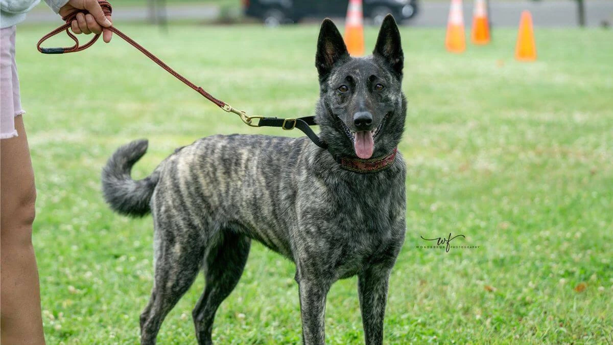
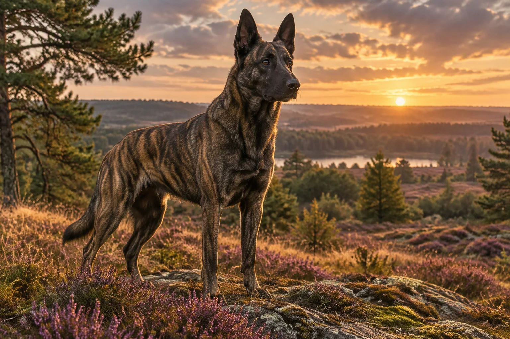
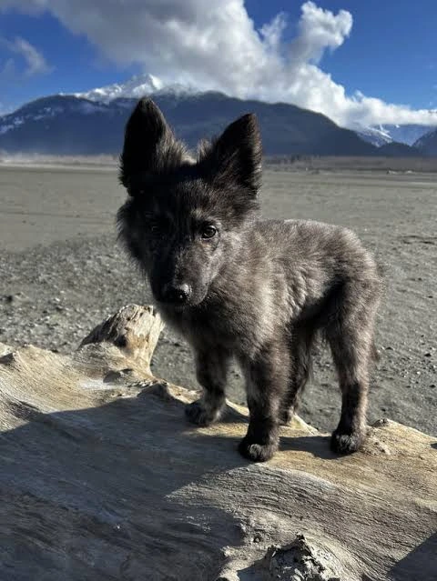
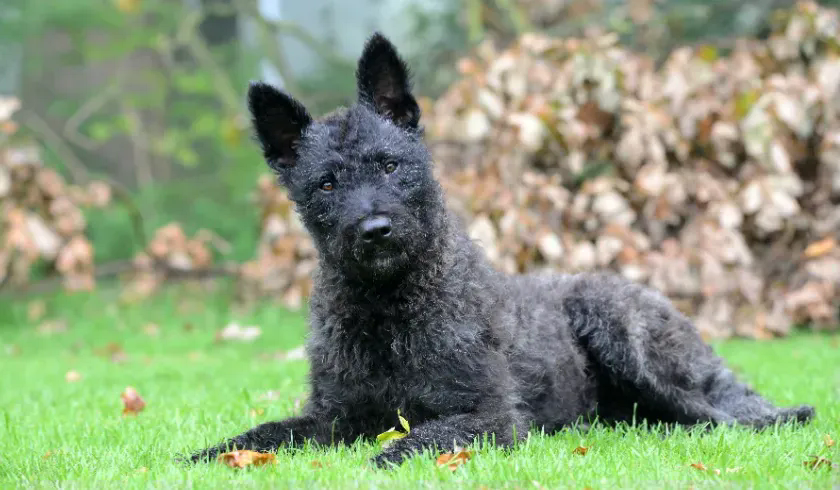

Short-Haired Dutch Shepherd
Close-fitting, hard coat with a woolly undercoat. Regular brushing helps manage loose hair, especially during seasonal shedding.
Individual coats and grooming needs vary.Dutch Shepherd Breed Guide
The Dutch Shepherd is a medium-sized, middle-weighted, well-muscled dog. The FCI standard emphasizes balance, endurance, a lively temperament, and an intelligent expression. Body length slightly exceeds height in an approximate 10:9 ratio.

Three recognized varieties

Close-fitting, hard coat with a woolly undercoat. Regular brushing helps manage loose hair, especially during seasonal shedding.
Individual coats and grooming needs vary.
Long, straight, well-fitting hair with a woolly undercoat. Careful brushing helps prevent tangles around feathering and high-friction areas.
Individual coats and grooming needs vary.
Dense, harsh, tousled coat with a woolly undercoat and characteristic facial furnishing. Coat maintenance may benefit from experienced guidance.
Individual coats and grooming needs vary.Working breed context
These are broad educational comparisons, not rankings. Genetics, breeding line, early development, socialization, training, environment, health, and individual temperament can substantially affect behavior.
| Factor | Dutch Shepherd | Belgian Malinois | German Shepherd Dog |
|---|---|---|---|
| Origin | Netherlands | Belgium | Germany |
| General size | Medium, athletic | Medium, lean, athletic | Medium-large, substantial |
| Typical energy | High; line and individual vary | Often very high; line and individual vary | Moderate to high; line and individual vary |
| Trainability | Quick-learning, independent, cooperative | Quick-learning, intense, handler-focused | Versatile, trainable, responsive |
| Coat | Brindle; short, long, or rough | Short; commonly fawn to mahogany with black mask | Double coat; several accepted colors and patterns |
| Common roles | Herding, detection, tracking, police, sport | Detection, police, military, sport, herding | Service, search and rescue, police, herding, companion |
| Inexperienced owners | Often challenging; careful individual selection and support matter | Often challenging, especially high-drive working lines | Varies widely by line; structured training remains important |